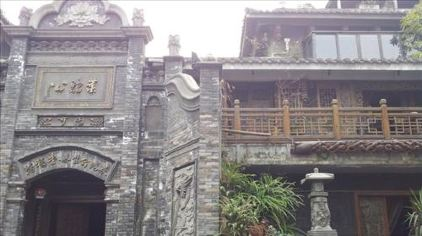

【成都旅游攻略】
“成都——一个来了就不想离开的城市”！成都地处四川盆地西北部，风景秀丽，气候宜人，自古就是全国五大商业都市之一。成都人文景观丰富，自然风貌也独具一格。幽静的青城山；喧闹的锦里；俊俏壮美的西岭雪山；和乐安详的平乐古镇，难怪晋代诗人左思曾由衷地称它“既崇且丽”。成都，这座宁静而繁荣的城市，既有深厚的文化积淀，又有优美的自然风光和舒缓闲适的生活节奏，让人来了就不想离开！
成都必去！
【宽窄巷子】
宽窄巷子是宽巷子、窄巷子和井巷子三条平行并列的老式街道和四合院的统称，号称“老成都的新名片，新成都的老客厅“。其中宽巷子代表的是市井的民间文化；窄巷子代表了成都的慢生活；井巷子的定位则是成都人的新生活。徜徉在宽窄巷子，细数那些承载了太多历史印记的老院子，伴着夕阳，仿佛走回到久违了的老成都生活。
地址：成都青羊区同仁路以东，长顺路以西。
交通：市区乘坐5路、13路、43路、47路、58路、64路、78路、81路、163路等公交车在金河路站下车，或乘坐62路、70路、93路、163路、340路等公交车在长顺上街站下车即可。
【锦里】
锦里曾是蜀国历史上古老而具商业气息的街道之一，而今的锦里，则洋溢着成都市井特有的喧嚣和随意。在这条几百米长的老街上，融汇了传统小吃、手工作坊、各种特色店铺和酒吧茶馆，游人熙熙攘攘，热闹非凡。走累了，来两串冷钵钵鸡；渴了，路边喝杯蒙山茶。看看美女，逗逗猫狗，真是个呆也呆不够的地方。
地址：武侯祠东侧隔壁
交通：市区乘坐公交1路、57路、304路、306路可达。
【大熊猫繁育基地】
来成都，怎能不近距离感受憨态可掬的国宝大熊猫呢？成都大熊猫繁育基地位于成都北郊，一条宽敞的熊猫大道将基地与市区相连，基地以初期从野外抢救的6只大熊猫为基础，在园区内又放养了小熊猫、黑天鹅、黑颈鹤、大雁和孔雀等珍稀动物，使得基地成为一个以大熊猫为主的野生动物天堂。
地址：成都成华区北三环熊猫大道1375号。
交通：新南门车站乘坐902路公交车可以直达熊猫基地。或乘坐1、45、63、90、70、83、82、49、60路到达青龙场汽车中心站，再转公交107路或532路到达大熊猫基地。市区打车约50元。
【三星堆博物馆】
三星堆遗址，距今已有5000至3000年历史，是西南地区目前所知的范围最大、延续时间最长、文化内涵最丰富的古城遗址，被誉为“长江文明之源”。
地址：德阳市广汉南兴镇真武村
【青城山】
青城山位于都江堰西南，是我国道教发源地之一。山上林木清幽，四季常青，故名青城山，素有青城天下幽之美誉。日出、云海、圣灯三大自然奇观，其中圣灯尤为奇特；每逢雨后天晴的夏日夜晚，上清宫附近的圣灯亭内可见山中光亮点点、闪烁飘荡，少则三、五盏，忽生忽灭，多则成百上千，山谷中灿若星汉。
地址：都江堰市西南
交通：成都新南门客运站和茶店子车站有班车发往青城山。
成都，一个真正属于吃货的天堂！成都，有着太多令外地人津津乐道的东西，风姿绰约的美女、憨态可掬的大熊猫、震撼眼球的美景～但是最令人久久回味的当然首推成都美食啦。整个成都其实就是一个庞大的美食城，各种令人垂涎欲滴齿颊留香的小吃；麻辣鲜香欲罢不能的火锅；历史悠久色泽鲜亮的川菜，都可以让你从城东吃到城西，从下午吃到深夜再到凌晨。这就是成都，一个真正属于吃货的天堂！

【老妈蹄花】炖的烂烂的一碗蹄花摆在白白的汤里，蹄花入口即化，汤汁洁白浓郁，里面还加了雪豆，蘸着红油的蘸料，吃起来别有一番风味。也就难怪成都的姑娘们个个都娇艳欲滴，这蹄花可是最好的美容滋补佳品啊。
【龙抄手】四川人讲的抄手既是北方的馄饨。正宗龙抄手个大皮薄，馅心细嫩爽滑，汤色雪白，口味多样。
【棒棒鸡】棒棒鸡本是乐山地区的传统小吃。棒棒鸡的鸡肉不是用刀切成，而是先用棒子打松后再手棒子而成，浇上久制的调料和红油，再加入花生米，口感麻辣鲜香。
【串串香】成都的大街小巷，随处可见大大小小的串串香铺子。海带、排骨、毛肚、香肠、藕片、冬瓜、甭管荤的素的，竹签上一串，大锅里一拴，口感麻辣鲜香，酣畅淋漓。
夫妻肺片、川北凉粉、兔头……尝不尽的成都美食！
【出行贴士】最佳出行时间：成都地处盆地，最适合旅行的时间是3～6月和9、10月。这两个时间段，温度适宜，雨水较少，是最适合出行的季节。当然，除了这两个时间段，冬季来成都的话，西岭雪山是观雪景和滑雪的好地方。
市区公共交通：
成都市区类似北京城区，分一环二环三环，每环之间有多条道路相连，交通四通八达，绝大多数景点都有公交车可达。成都公交多为无人售票车，上车1元，空调车2元，自行投币，不设找零。
地铁：成都地铁目前只开放了一号和二号线。一号线可达升仙湖、火车北站、天府广场、火车南站和海洋公园；二号线可达茶店子车站、春熙路、金沙遗址博物馆，票价2～4元。